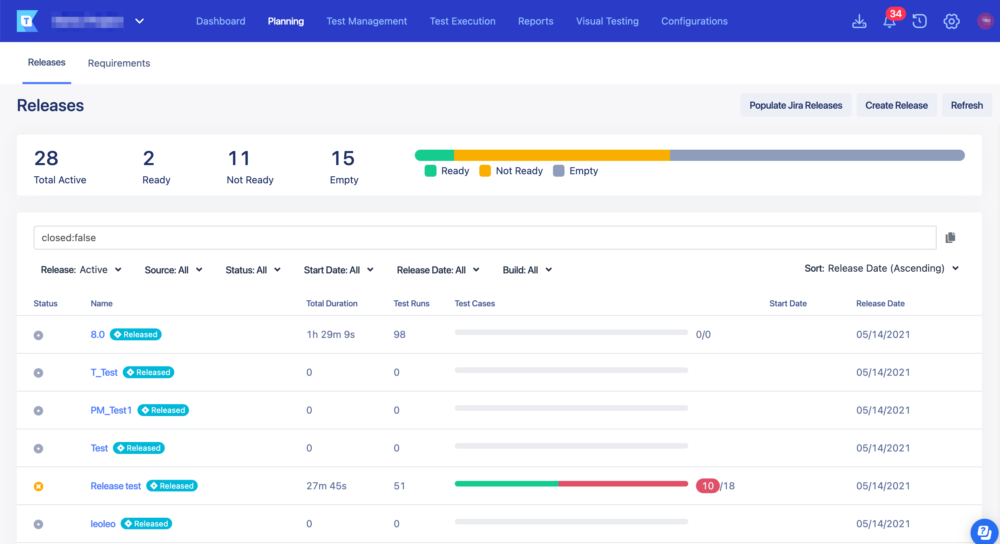
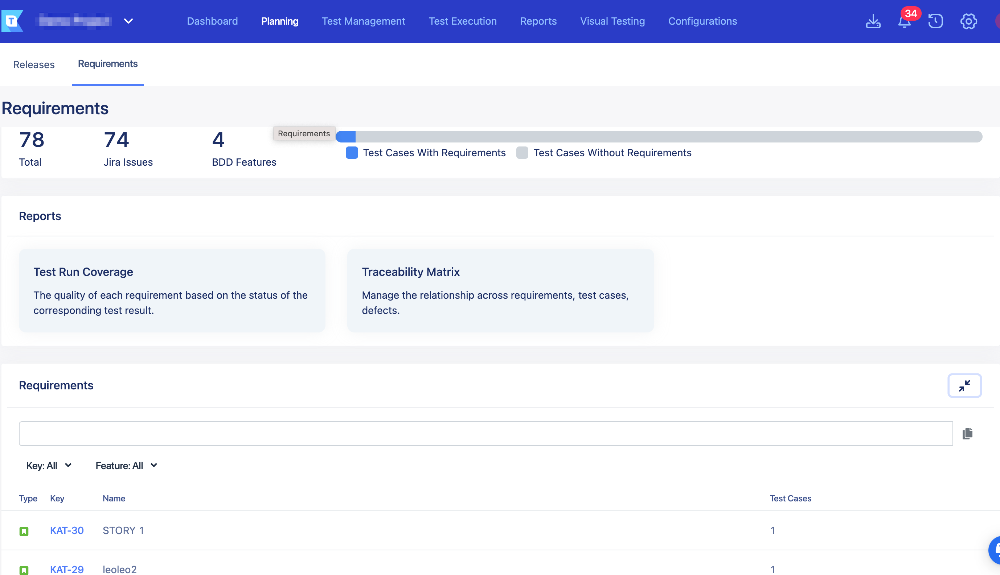

Quick guide for QA managers
In this guide, you'll explore some of the possibilities the Katalon Platform can offer to plan tests, organize tests, and analyze test reports.
Requirements
You have created a Katalon account.
You have connected a Git repository for your project. To learn how to connect the Git repository to your project, refer to this document: Upload test scripts from the Git repository to Katalon TestOps.
#1 Plan tests
The test planning features in Katalon TestOps allow you to check release readiness and requirement coverage. To utilize this feature to the best of its capabilities, it is advised that you integrate Katalon TestOps with Jira. To learn more about TestOps - Jira integration, you can refer to this document: Enable Katalon TestOps - Jira integration for test management.
Once Jira integration is enabled, you can:
Populate Jira releases. See: Populate Jira releases.
Link test cases to Jira requirements. See: Link test cases to Jira requirements.
After creating a release, you can link test runs to a release. See: Link test runs to a release in Katalon TestOps.
If you haven't created any test runs, you can refer to the on-boarding document for testers: Quick guide for testers.
The following picture shows the Planning > Releases tab after linking test runs to Jira releases. Here you can see the status of each release and its readiness.

The following picture shows the Planning > Requirements tab after linking test cases to Jira requirements. Katalon TestOps also provides test case coverage and traceability matrix reports.

If you have enabled BDD configuration in Katalon TestOps, you can also quickly check BDD test results in the Requirement tab. Refer to: View BDD test results in Katalon TestOps.
#2 Organize your test cases
In Katalon Platform, you must first upload your test scripts using the Git repositories to Katalon TestOps. See: Upload test scripts from the Git repository to Katalon TestOps. This allows you to manage version control and synchronization in the Katalon Platform.
To manage your tests in Katalon TestOps. See: Manage test suites in Katalon TestOps.
To manage your tests in Katalon Studio. See:
If you want to run parallel tests with multiple browsers, you can add and manage your test suites in a test suite collection. See: Manage test suite collections in Katalon Studio.
#3 Analyze test reports
Katalon Platform provides several ways to gain a clear view of the overall readiness of your projects.
As part of your daily tasks, use the dedicated reports available in our TestOps dashboard to evaluate your testing progress.
The most popular reports are:
| Report | What does it do? |
|---|---|
| Test Activities | Shows your testing activities in daily/weekly/monthly periods. This enables faster troubleshooting and assists you in the decision-making process of your product cycle. See: Test activities reports. |
| Release Readiness | Shows how ready your releases are. This allows you to:
|
| Productivity | Tracks the total number of test cases you have created in your project in a daily/weekly/monthly period. See: Productivity reports. |
| Quality | Shows the test quality based on Flakiness Test Distribution (the distribution of test cases by their flakiness probability). See: Quality reports. |
| Platform Coverage | Shows the coverage of test runs or test results executed in corresponding environments. See: Platform coverage reports. |
| Requirement Coverage | Provides the coverage status of requirements for a given scope. This allows you to centralize all Jira and BDD requirements in one single place for reports and analytics. See: Requirement coverage reports. |
| Local Test Environment | Shows the number of online and offline agents and the distribution of all agents by the operating system. See: Local test environment reports. |